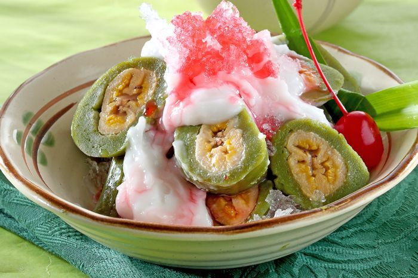

Pisang Ijo Recipe
Description
Es Pisang Ijo is one of Indonesia's very own beverage from Makassar that you should try as a side dish for lunch. This beverage is using bananas wrapped in green layer and combined with rice flour porridge. Can't wait to enjoy it? Follow the steps below.
Ingredients
Green Banana Materials
- 125 grams of rice flour
- 50 grams of sago flour
- 400 ml coconut milk from 1/4 coconut
- 3/4 teaspoon salt
- 75 ml of suji water from 25 pieces of suji leaves and 4 pieces of pandan leaves
- 1/2 teaspoon whiting
- 75 grams of granulated sugar
- 1 drop of light green coloring
- 8 plantains, steamed bananas
- 8 pieces of banana leaf for wrapping
Sauce Materials
- 550 ml coconut milk from 1/2 coconut
- 45 grams of rice flour
- 10 grams of cornstarch
- 75 grams of granulated sugar
- 3/4 teaspoon salt
- 2 pandan leaves, tie
Supplementary materials
- 400 ml of cocopandan syrup
- 1,200 grams of shaved ice
Directions
- Mix together rice flour, sago flour, coconut milk, salt, suji water, whiting, sugar, and light green coloring. Cook while stirring it, until it is popping.
- Take 100 grams of the mixture. Flat on plastic. Put the banana. Wrap the banana inside it
- Take a banana leaf. Give banana mixture. Wrap. Pin with a stick.
- Steam over medium heat 30 minutes until cooked. Cool it down. Cut it in a landslide.
- For sauce: boil the ingredients while stirring until boiling and thick. Cool it down.
- Serve green bananas with sauce.